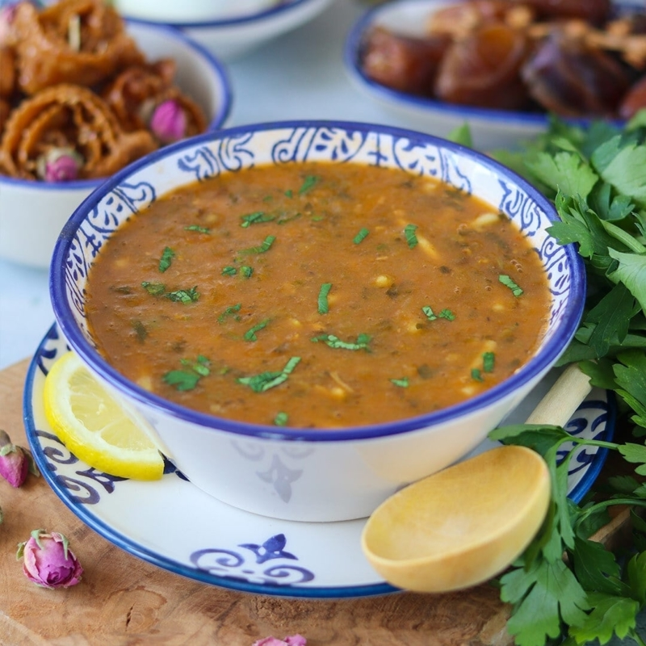

making Hrira

this is Harira
Hrira is a traditional Moroccan soup that is both delicious and nutritious. It's often served during the holy month of Ramadan, but it can be enjoyed at any time. Here's a basic recipe for making hrira:
Ingredients
For the soup:
- 1 cup dried chickpeas, soaked overnight and cooked until tender
- 1/2 cup lentils
- 1/2 cup vermicelli or broken angel hair pasta
- 1 large onion, finely chopped
- 3-4 cloves of garlic, minced
- 2 tablespoons olive oil
- 1 teaspoon ground cumin
- 1 teaspoon ground ginger
- 1 teaspoon ground paprika
- 1/2 teaspoon ground cinnamon
- 1/2 teaspoon ground turmeric
- Salt and black pepper to taste
- 1 can (14 oz) of diced tomatoes
- 1/4 cup fresh cilantro, chopped
- 1/4 cup fresh parsley, chopped
- 1/4 cup fresh coriander, chopped
- 6-8 cups of chicken or vegetable broth
- Juice of 1 lemon
For the garnish:
- Lemon wedges
- Fresh cilantro, parsley, and coriander
- Hard-boiled eggs (optional)
- Harissa or hot sauce (optional, for extra heat)
Steps
- Start by preparing the chickpeas. Soak them in water overnight, then cook them until they are tender. If you're using canned chickpeas, you can skip this step.
- In a large soup pot, heat the olive oil over medium heat. Add the chopped onions and cook until they become translucent.
- Add the minced garlic and cook for another minute or so, until it becomes fragrant
- Add the ground cumin, ginger, paprika, cinnamon, and turmeric. Stir well and cook for a couple of minutes to release the flavors.
- Add the diced tomatoes and cook for a few minutes, stirring occasionally.
- Pour in the chicken or vegetable broth, and add the cooked chickpeas and lentils. Season with salt and black pepper.
- Bring the soup to a boil, then reduce the heat and let it simmer for about 20-25 minutes, or until the lentils are tender.
- Add the vermicelli or broken angel hair pasta to the soup and cook for another 5-7 minutes, or until they are tender
- Stir in the fresh cilantro, parsley, and coriander. Save some for garnish if desired.
- Squeeze in the juice of one lemon and stir well.
- Taste the soup and adjust the seasonings as needed.
- Serve the hrira hot, garnished with lemon wedges, additional fresh herbs, and, if you like, hard-boiled eggs. You can also add some harissa or hot sauce for extra heat.
Enjoy your homemade hrira soup! It's a hearty and flavorful dish that's perfect for a comforting meal.
For more recipes , visit those links :
Baghrir